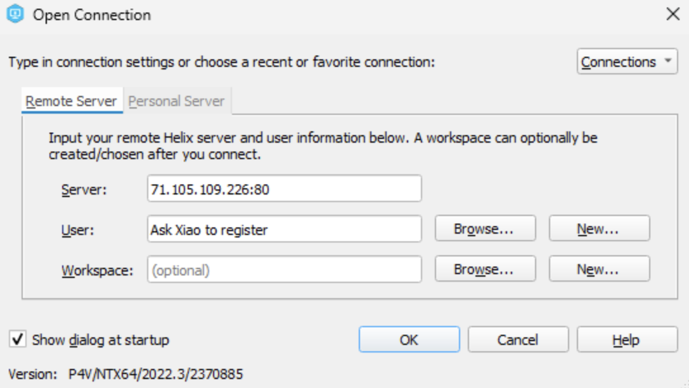
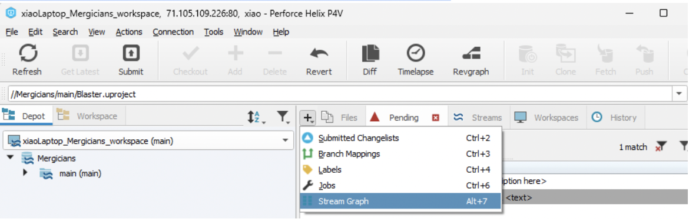
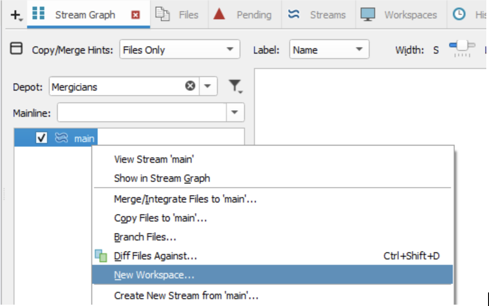
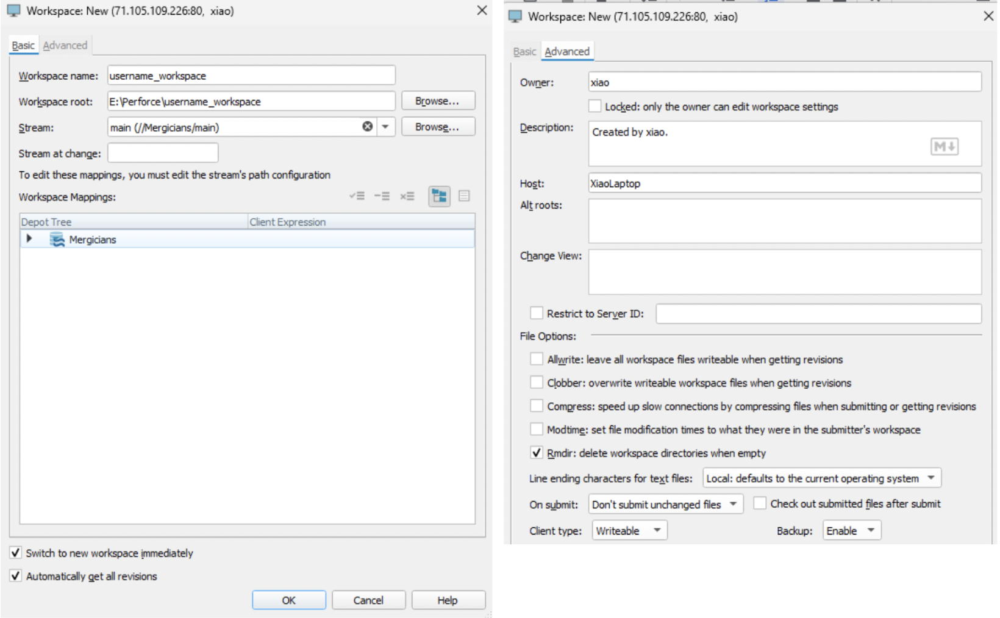
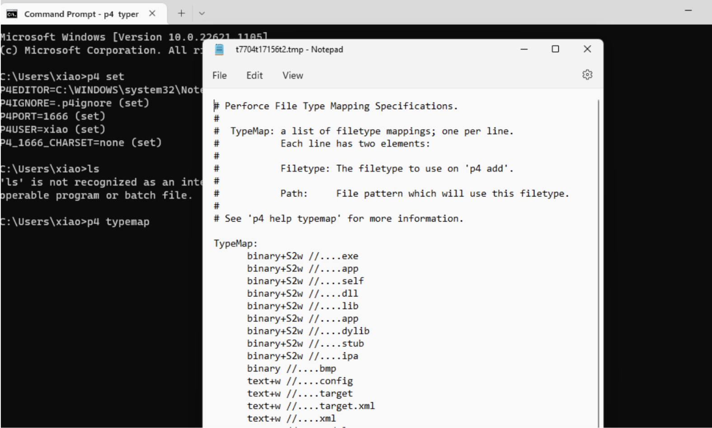
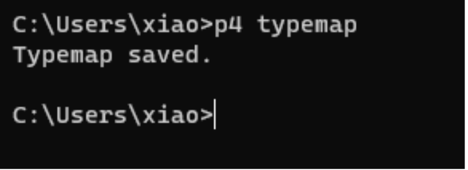
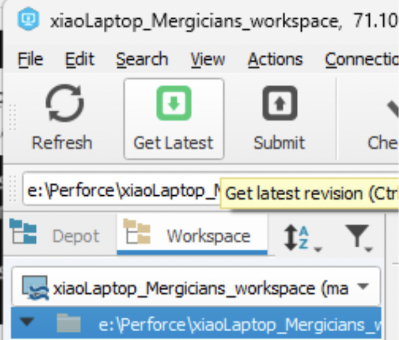

Dowbload and Install
-
Follow the video from 3:50 to 5:30
Unreal Source Control: Start Collaborating with Unreal Engine| Perforce
-
Download and install Perforce following the video.(Select Windows and EXE)
-
If a sign up form pops up after you click download on the Perforce website just select “Helix core server” and “on premise”
-
Install P4D and P4V.
Connect and Create Workspace
-
Ask Xiao for a user name.
-
When you see this, put in 71.105.109.226:80 for Server:
 -
If Xiao has registered a user for you, you should be able to Browse and see your username.
-
Click the + button next to Files and open up stream graph.
 -
In the Stream Graph, right click on the main stream and create a new workspace.
 -
When creating a workspace, make sure the stream is main and check automatically to get all revisions.

Typemap setup
-
Once the workspace is created, open the command line and type p4 set P4IGNORE=.p4ignore

-
Then type p4 typemap, your notepad should be opened.
 -
Copy from this file and paste it under your empty typemap. Then close the notepad and you should see the following image

Opening the Project
-
Click get latest in your P4V. Wait for the download to finish.
 -
Under your workspace, locate a file that ends with .uproject in workspace, and click Check Out, now you should see it under your pending panel.
-
Double click to open it, a window will pop up saying Generating project files if you are opening it for the first time.
-
After it finishes, you should see some new folders and a .sln file.
-
If you get a pop up that says something along the lines of “… set association for projects “ means you don’t have permission to edit the project.
-
This means you need the check out
Example: If you want to change a UI Widget blueprint, go to the UIs folder and manually check it out. -
Every time you want to do something, Please checkout the .uproject file.
-
Everything you Check Out will be in the Pending tab,under your default change list. Press Submit to push the file, and write your comments
-
If you connect your Unreal Engine to perforce you can check out in Unreal Editor
-
If you hover over a file you can see when it was last checked out. An exclusive checkout means only one person can change it at the moment.
-
Everything under the Content folder is exclusive.
Connect Perforce with UE
-
After the project opens, connect Perforce to UE by following the guide here Connecting Perforce to Unreal Engine
Please also read Unreal Engine Perforce Best Practices